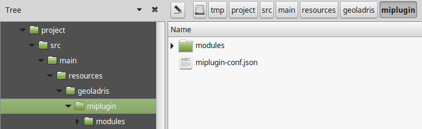
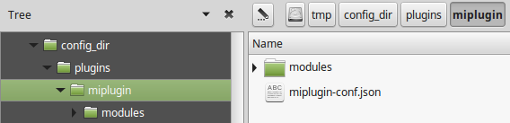

Migrando plugins a la versión 6.x
A partir de la versión 6.0.0, todos los plugins deben contenterse en un subdirectorio con el nombre del plugin, dentro de geoladris o plugins (en función de su empaquetado; ver plugins).
Empaquetados como .jar
Anteriormente, los recursos de un plugin empaquetado como jar estaban directamente dentro de geoladris, por lo que un plugin de este tipo que funciona con la versión 5.0.0 no será válido para la versión 6.0.0.
Para migrar a la versión 6.x bastará con crear un subdirectorio con el nombre de nuestro plugin dentro de geoladris y mover todos los recursos ahí.
Por ejemplo, para un plugin empaquetado como jar, en la versión 5.0.0 tendríamos algo como esto:

que deberíamos transformar a:

ModuleConfigurationProviders
En el caso de que se hayan desarrollado ModuleConfigurationProvider propios, estos deben añadirse a la aplicación de manera distinta. Anteriormente se añadían a un objeto Config en un ServletContextListener:
@Override
public void contextInitialized(ServletContextEvent sce) {
Config config = (Config)
sce.getServletContext().getAttribute(AppContextListener.ATTR_CONFIG);
config.addModuleConfigurationProvider(new LayersModuleConfigurationProvider());
}
Ahora se añaden directamente a una lista en el ServletContext:
@SuppressWarnings("unchecked")
@Override
public void contextInitialized(ServletContextEvent sce) {
List<ModuleConfigurationProvider> providers = (List<ModuleConfigurationProvider>)
sce.getServletContext().getAttribute(Geoladris.ATTR_CONFIG_PROVIDERS);
providers.add(new LayersModuleConfigurationProvider());
}
Empaquetados en el directorio de configuración
En este caso, los plugins ya estaban dentro de un subdirectorio de plugins en la versión 5.x, por lo que funcionarán en la versión 6.x sin ningún cambio.
Migrando plugins .jar al directorio de configuración
Puesto que a partir de la versión 6.x todos los plugins están contenidos en un subdirectorio (independientemente del empaquetado), para migrar un plugin empaquetado como .jar al directorio de configuración bastará mover el subdirectorio del plugin de geoladris a <config-dir>/plugins.
Por ejemplo, este plugin .jar:
habría que moverlo a:
